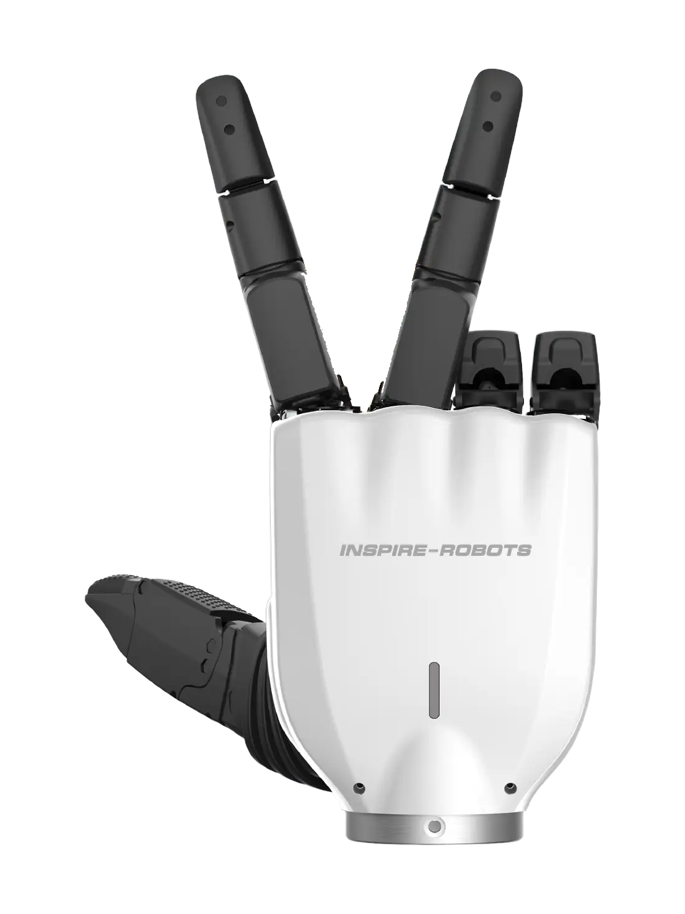
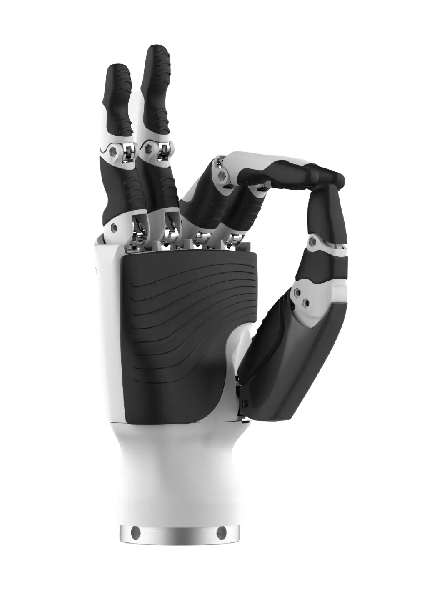
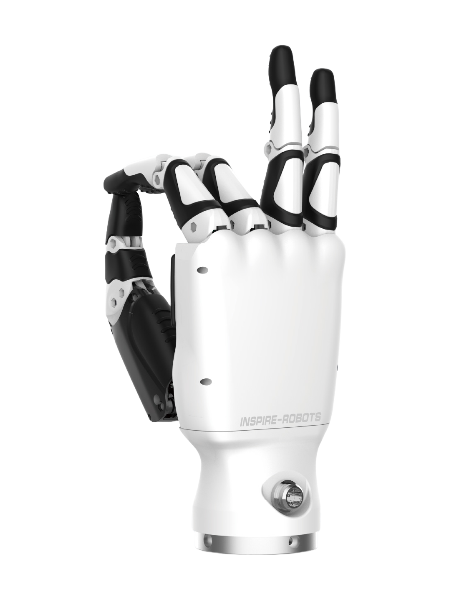
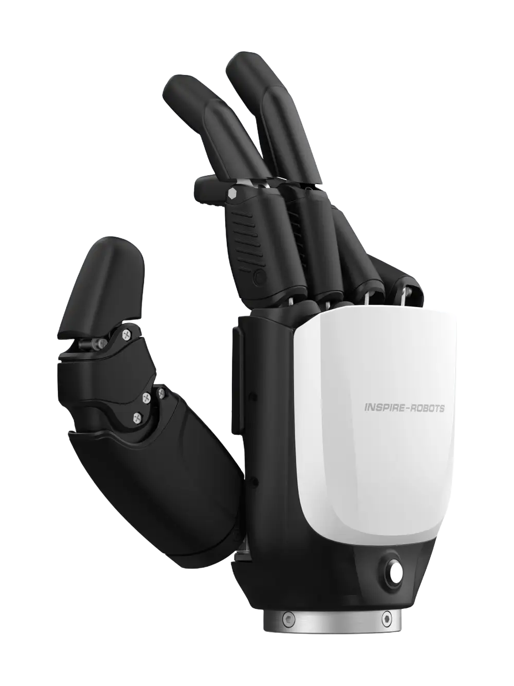
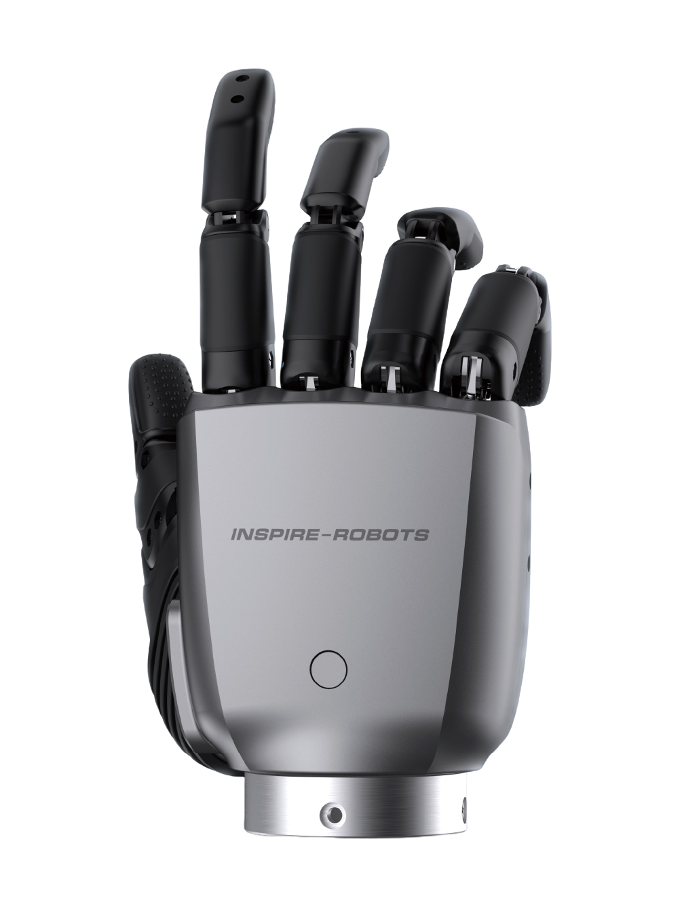
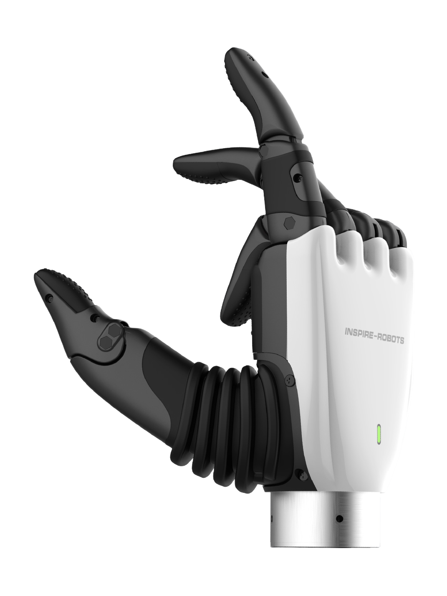

RH5DG2
Other variants RH5DG2-E4-T1 · RH5DG2-E2-T1
Figures below are for RH5DG2.
A robot hand from China.
Sources retrieved: 4 November 2026 (A, B)
- Status
- In production
- Intended use, per the manufacturer
- Not stated
- Indicative price
- 20,599.99USDSource and note: Indicative priceB inspire-robots.store/products/the-dexterous-hands-rh5rh5dg2 · Retrieved 4 November 2026

Product render from the manufacturer's own website (en.inspire-robots.com).
Specifications
8/18 specifications disclosed 10 not stated
10 fields hidden
How to read the figuresShow guideClose
- not statedNo source
- noyesStated by a source
- 0Reported as zero
- ASource
- A*Source with a caveat (select it)
- CERecords only what the manufacturer states regarding CE marking.
Select a source marker for source details and notes.
The hand2/4 disclosed
Performance2/4 disclosed
Physical2/2 disclosed
Sensing and autonomy1/3 disclosed
Commercial1/1 disclosed
Compliance & certifications0/4 disclosed
Against the field
Each strip holds every robot of this type in the guide that states the figure, one bar per group of values. Further right means a larger figure, not a better robot. A taller bar means more robots in that group.
Fingertip force
at least 20N
25 robot hands state a fingertip force
RH5DG2 states a lower limit, not one figure, so it is shown open-ended and not ranked against the others. 9 state only a bound (≥ or ≤) and are not ranked. DG-5F-M lies beyond the end of the axis and is drawn at its edge as an open bar.
Weight
1,020g2.25lbOur conversion from 1,020 g. The manufacturer does not state an imperial figure itself, so the conversion has no source of its own.
41 robot hands state a weight
12 state a higher figure, 25 a lower one. 3 state only a bound (≥ or ≤) and are not ranked. Log scale: each step along the axis multiplies the value.
Active degrees of freedom
13DoF
42 robot hands state degrees of freedom
17 state a higher figure, 23 a lower one. 1 more states exactly the same figure.
Indicative price
20,599.99USD
20 robot hands state a public price
3 state a higher figure, 12 a lower one. 4 more state exactly the same figure. Log scale: each step along the axis multiplies the value.
Notes
Current draw: “Quiescent current 310±20mA (24V)” and “Peak current 7.5A @24V”.
Accuracy: “Repeatability ±0.2mm”; “Force resolution 0.1N”.
Motion: “Hand closing time ≤0.8s”; “Lateral rotation range of thumb 65°‑175°”.
Tactile sensors: “Number of tactile sensors 8”; “Range of tactile sensor 30N”; “Tactile sensor accuracy 5%FS”.
Inspire's webshop page for the RH5DG2 says “All orders are shipped FOB, and relevant fees are affected by the local policy of your delivery.”
Sources
One line per source, not per figure: a source has one retrieval date.
- Aen.inspire-robots.com/product/rh5dg2/Main source. Retrieved 4 November 2026
- Binspire-robots.store/products/the-dexterous-hands-rh5rh5dg2Retrieved 4 November 2026
More robots
Same manufacturer

RH56BFXInspire Robots

RH56DFXInspire Robots

RH56E2Inspire Robots

RH56F1Inspire Robots

RH56H1Inspire Robots
- No photograph
RH5MK1Inspire Robots
All robots from Inspire Robots